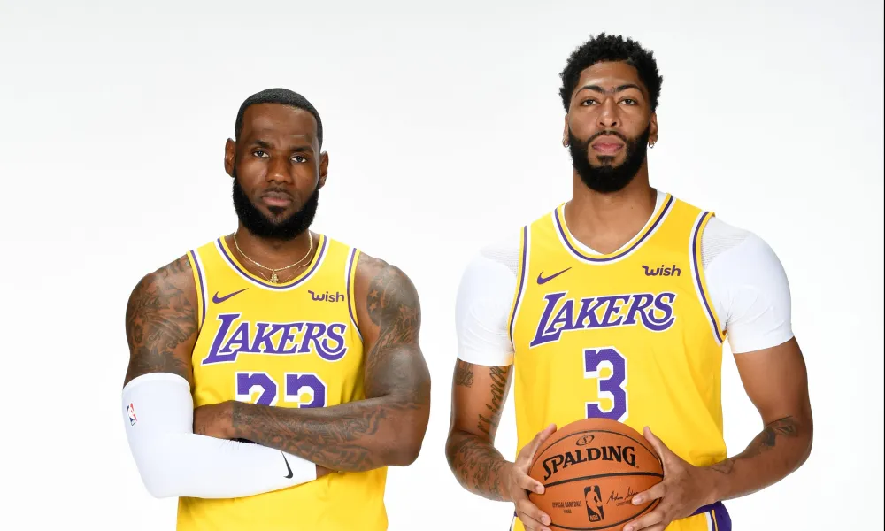

Following the Shaquille O'Neal trade, Kobe Bryant's career took off. With the return of Phil Jackson after the turmoil of the 2003-04 season, Bryant set multiple records, including scoring 62 points in three quarters as well as scoring 81 points in a game. This 81-point performance was good enough for second most of all time in NBA history, behind Laker great Wilt Chamberlain with 100 points in 1962. On February 1st, 2008, the Lakers and Grizzlies had a blockbuster deal just before the trade deadline. The Lakers received promising young star Pau Gasol and a second round pick for three players and three future picks. This trade was vital to the Lakers' success in the following years, as they would go on to beat the Magic and Celtics in the 2009 and 2010 Finals, respectively.
The years following the 2009-10 season were extremely daunting until the Lakers signed LeBron James in the 2018 summer. While the Lakers would earn the first seed for the 2011 Western Conference playoffs, they would lose disastrously to the Mavericks. This series was a clean sweep (4-0), and was foretelling of the future to come. They would make the playoffs the next two years, but come up short early again. The Lakers began to experience consecutive losing seasons in the 2013-14 season, when Kobe Bryant suffered a major injury. The remainder of Bryant's career would be similar, but he did finish on a strong note vs. the Utah Jazz in the final game of his career. On April 13th, 2016, the Jazz came to town, needing a win in order to make the playoffs. However, Los Angeles had a different narrative, as one of the greatest of all time was playing his last game ever. Bryant had 60 points, atypical for a player in his last game. The Lakers would win by five, and required a steep fourth quarter comeback.
Following Kobe's career, the Lakers were stuck. They spent two more seasons with a losing record, and even spent another one with the signing of LeBron James. However, in the 2019 offseason, they had a blockbuster trade with the New Orleans Pelicans, sending three players and three picks in exchange for superstar Anthony Davis. Under first year coach Frank Vogel, the 2019-20 Lakers went 52-19 in a shortened season to COVID-19, good enough for first in the Western Conference. The Lakers would move on to win the Finals in the 'bubble,' beating the Miami Heat in six games. Following this championship season, the Lakers would lose in the first round in the 2020-21 season to the Phoenix Suns. In 2021-22, the Lakers started 2-10, but came back to make the Western Conference Finals, but got swept by the Denver Nuggets. The Lakers last season lost in the first round to the Denver Nuggets as well. So far this season, the Lakers have started 7-4, including being undefeated at home. First year coach JJ Redick has looked promising, as he's received heavy media criticism for being a hire catered to LeBron. The Lakers near future relies on their ability to acquire depth, as they lack scoring power off the bench. They have the potential to be great like in the past, but need to make some moves before they can comfortably say they are true contenders.
A photo of LeBron James and Anthony Davis, respectively:
